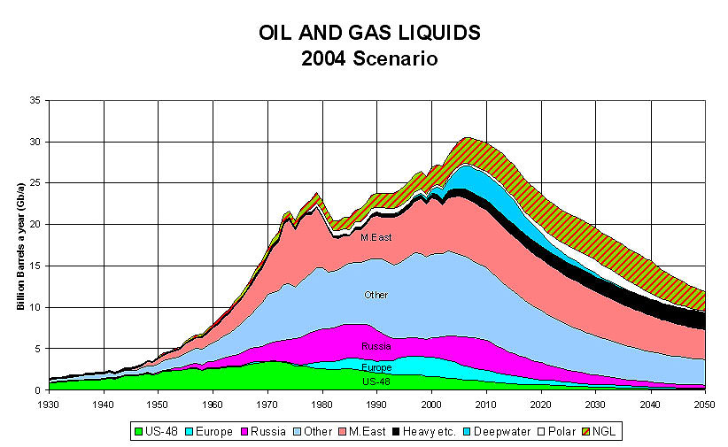
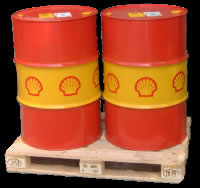
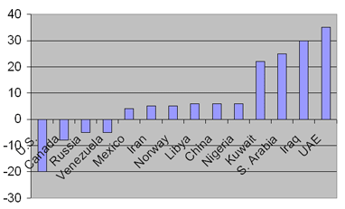
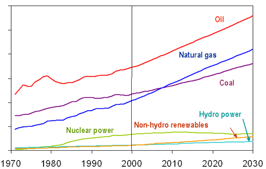

Look around. See that world out there? Well, it is about to change - forever. Think of wars, famine, diseases and worldwide turmoil. That’s what’s coming down, as we pass a nasty spike in the statistics called the ‘Oil Peak’. In fact, we may just have passed it already.
And in fact, that’s not even
the main reason why the Oil Crash is one of the ugliest scenarios you’ll
find on this site.
The real
bad thing is that the Oil Crash is going to happen. Period. Left-wing
and right-wing; conservative and progressive; scientists and politicians: ALL
agree that the crisis is inevitable. In fact, the Oil Crash may have
begun already. As we write this, the US has conquered the oil well called Iraq and the
oil price is at an all time high of over 40 dollars per barrel. This looks bad,
folks...
|
|
It isn’t hard to explain what the trouble is all about. The 'Oil Peak' is the point where the world’s oil supplies are exactly half used up. Yes, I felt some relief when I heard that for the first time, too. Apparently, after all these decades of industries and cars, we’ve still got half of all our oil supplies left! Put precisely: we started out with an estimated total of about 2 trillion barrels. And in 2003, some 900 billion of it had been used.
But there's a downside. When an oil well is half empty, you’ll have to go through an increasing amount of trouble to pump the last bit up. Think of it like eating yogurt out of a carton. At first, you’ll have no trouble to bring out spoonfuls of yogurt at all. But after a while, you’ll carefully have to maneuver your spoon around along the sides and corners of the carton to bring the last bit out. In oil wells, it goes the same way.
So when half of all oil in the world is up, the price per barrel will begin to rise. The prices will steadily go up, with about 1,5 to 3 percent a year. But meanwhile, world demand for oil is on the rise, too. Currently, the entire world consumes about 75 million barrels a day -- or 25 billion barrels per year. But in ten years time, demand is expected to rise by more than two thirds, to 135 million barrels a day.
Obviously, there's a gap here. We’ll have an oil crisis. According to some estimates, the price of a barrel of oil will increase, don’t look now, five- to six-fold in only a few years time, to prices up to 200 dollars per barrel! This will unleash a worldwide economic crisis beyond imagination, making the Great Depression of the 1930s look like a fun time.
|  |
|
|
The real problem, of course, is that our society is addicted to cheap, abundant oil. Our cars, airplanes and ships run on oil. Our electricity is generated in oil-fueled power plants. The stuff you buy in the stores is brought there by trucks that run on oil. In the end, literally everything is to some degree ‘made’ of oil!
So when oil gets expensive, so does our world. Even seemingly innocent things like socks, drinking water and bread will become very expensive. Factories and businesses will go bankrupt. Unemployment will explode, pushing up the state deficit and deepening the crisis even more. Banks will shut down, thereby killing the savings of their clients. In the end, the Oil Peak will send massive shockwaves through the world’s economies.
If you’re an American, your problems are even worse. The US economy is particularly vulnerable to oil problems, not just because the US consumes so much oil, but also because the oil trade worldwide goes in dollars. Consequently, when the oil trade hampers, the US economy takes the punches.
But you don’t want to live in one of the developing countries, either. South-America and Africa are very vulnerable to an oil crisis too, because their economies are weak as they are already. The Peak Oil will trigger an instant and sharp crisis in the Third World, causing even more wars, famines and deaths.
Wind stuff
So if it’s all that bad, we’d just turn to some other kind of energy, right? We’ll have wind mills, and solar cells, and everything will be cool again, you say. Well -- actually, that won’t work. The problem is that at the moment, there just are no real alternatives!
Take wind energy. Wind is obviously stuff that doesn’t contain a lot of energy -- just compare slamming your head into a bit of wind with slamming it into a concrete wall. And what’s more: to build wind mills, you’ll have to weld steel, drive all kinds of stuff and engineers around in trucks and cars, build factories and make thousands of components. In the end, it costs more energy (oil) to actually build a windmill, than a windmill will ever generate during its entire lifetime!
Roughly the same goes for other so-called ‘alternatives’, like solar cells, hydrogen energy, biomass energy and what-have-you (for the details, check the Q&A below). They all cost more energy (oil) than they produce! The only realistic alternatives are gas and nuclear power. But gas runs out too, and it doesn’t help that we are closing down many of our nuclear power plants.
Nuclear
fusion, perhaps? Indeed, that would be a clean, good alternative to
oil. But the problem here is, the technology just isn’t ready yet. We need
to do more research. After all, you don’t want to risk blowing up part of
the planet in an all-too-hastily done fusion experiment. "You wanted
energy? Here, have some!"
And of course, even when it comes to alternatives, we’ve still got this
world here that is hooked on oil. Our cars run on gasoline, not on
electricity. So we need to replace all of our cars and rebuild and rewire most
of our society first, before we can use nuclear fusion or nuclear power. And
that takes a lot of, uhm... the black stuff.
The cavalry and we
But hold it now, you say: we’ve faced oil crises before, haven’t we? Indeed, in 1973 and 1979, the flow of oil hampered too, plunging the world economy into crisis instantaneously. But back then, it was all easy. Venezuela just pushed up their oil production a bit -- and presto, cheap oil was back again. This time, it is all different. Once we’ve passed the Oil Peak, there will be no cavalry to help us out. Every oil producing country faces the same problem. We’ll have to go cold turkey on our oil addiction. That's just the way it is.
|
|
By now, you probably see how immensely complicated and big the problem really is. And we have only given you the broader picture. We haven’t detailed the wars and turmoil the Oil Peak will inevitably unleash. We haven’t elaborated on the fact that all the experts agree we won’t find any new oil fields.
The question is not if, but rather WHEN the crisis will strike. The ever-optimistic oil industry says it will last until approximately 2020 -- giving us some head start, to test those nuclear fusion stations and replace our cars. But most economists think we will reach the Oil Peak sometime over the next few years -- before 2010. The leading Association for the Study of Peak Oil (ASPO) calculates 2008 will be the year.
But in fact, there are some disturbing signs the crisis has begun already. Obviously, the oil price is in trouble -- just read the newspapers. It goes up and down, and up and down, like a rollercoaster. This is exactly what the experts predict would happen right before Peak Oil.
Oh, but surely, there has to be SOME way out? A comforting punch-line, or a soothing, concluding remark? Actually, even we at Exit Mundi are at a loss. Looks like we have to brace ourselves and face the Big One this time. We’ll see death and destruction, and see our world change forever. Can’t say we’re looking forward to it, either.
And even then, we’d have to
have some luck. There’s a particularly nasty glitch in the theories even the
economists don’t know about. For in fact, the biggest risk we’re facing is
not even the Oil Crisis itself -- but rather, the invention of some kind of
new energy source!
Say
we all stop using oil tomorrow. That would mean that suddenly, we will stop
putting huge amounts of carbon dioxide into our atmosphere. Now, this is
probably not a good idea. Over the years, we’ve got huge
amounts of green plants, plankton and
algae on our planet, courtesy to the greenhouse effect. If we suddenly stop
producing greenhouse gases, these plants and algae will suck all of the carbon
dioxide out of the atmosphere.
This
will kickstart an instant, all-out Ice Age, as our planet is robbed from
its protective carbon dioxide ‘coat’. The Earth would freeze over. It
would turn into a huge snowball.
Now, who wants to have an Ice Age without any heating to keep us warm?
|
Economic
Hiroshima in Graphics |
|  |
|
|
|  |
|
|
Here at Exit Mundi, hardly a day goes by without e-mails concerning the Oil Peak Problem. Here are some of your proposals and questions - and our answers.
|
|
No, bad
idea. As we explained above, windmills are in fact very energy-inefficient. It has been estimated that if you wanted to replace all of the UK's energy for wind, you'd have to build a vast, kilometers wide park of windmills that literally surrounds the island! More technically, the problem is that the power a wind mill generates is proportionate to the third power of the wind speed. That's quite a mouthful, but simply put, it means that when the wind speed halves (say, from 6 Beaufort to 3 Beaufort), the power goes down not by 1/2, but by 1/2 * 1/2 * 1/2. That's an amazing 88 percent less power! And you can't simply build a better wind mill. The 'power curve' is a physical property of wind. It is just how wind works! The consequences of this are dramatic. A good, modern wind turbine only really generates electricity between wind forces 4 and 7/8. Less wind, and the mill will hardly generate any power at all (because of the power curve). Go above it, and the power will get so big, the wind turbine will have to shut down, to prevent damage. The bottom line is this. On average, a wind mill only generates
something like 16 percent of the power it should produce! So when you
see a wind mill that has a tag "One megaWatt" on it, it only
does so under ideal circumstances. On average, it only produces 160
thousand Watt. (Source: Dutch research, in: J.J. Halkema, "Windmolens,
feiten en fictie") |
| I see, no windmills. Hydrogen, then? | Little chance. Hydrogen indeed a cheap, clean source of energy. But there's a catch: you can't find it anywhere on Earth. You will have to make it first, by splitting up water (H2O) into hydrogen (H2) and oxygen (O2). And that costs you... yes, energy. This makes hydrogen nothing more than a modern battery. You invest energy in making it, and after a while, you tap energy from it again. But like every battery, it won't magically give off more energy than you put into it in the first place. And that's not everything. You will have to store your hydrogen somewhere. This means you will have to compress it into a high-pressure tank. Those tanks are heavy, and the compressing costs you... energy. So if you add things up, hydrogen costs energy.
It doesn't generate it. |
| But why the fuss over hydrogen powered cars then? | The basic idea behind it is that you
use wind or solar energy
to create the hydrogen. This would give you a clean source of fuel. But
as we explained already, that trick doesn't work. It has been estimated that oil would have to become twice (!) as expensive, before the hydrogen economy would begin to pay off. |
| Ok, ok... But hold it, you said 'solar energy'. Isn't that an option? | Right now, it isn't. Solar cells aren't just good enough. At the moment, you need the area roughly the size of six ping pong tables to power a car. And of course, you need daylight to power up your batteries. And: what goes for wind mills also goes for solar cells. It costs lots of energy to make them. And energy is oil. |
| I've heard of a stuff called 'orimulsion'. There seem to be vast quantities of it. And it's almost the same as oil. Is that going to work? | No, not
quite. Orimulsion is another fossil fuel, made of bitumen. And indeed, there's an estimated supply of it of about 1,2 trillion barrels. Even better: you can quite easily turn it into petrol, and use it to generate electricity. But that was the sunny side. In the 1980s and 1990s, several power plants tried orimulsion. But they were shut down, because refining and burning orimulsion is very, very dirty. Orimulsion contains up to 2,9 percent sulphur. This ends up as sulphuric acid in the atmosphere. That gives you HUGE problems, like global warming, acid rain, dangerous smog and global dimming. No wonder orimulsion has been nicknamed "the world's dirtiest fuel"! You really don't want to use it. |
| Hey, I've got an idea! Why not go back to using coal? Hitler's Third Reich ran on coal entirely, was it not? | True. Indeed, the estimated supply of coal is 2 trillion tons. And yes, you can wrench oil out of coal. In fact, as we speak, about 23 percent of all energy of the world comes from coal. But the down side to this is that coal will run out eventually, too. Some say it will last 18 years, others say longer. And that's not all. We'd have to adapt many of our factories and power plants and refineries, which would require HUGE investments. And then, coal is another very dirty fossil fuel. It chokes up the atmosphere even more than oil does. |
| How about 'heavy oil', tar sands? | Useless. Most of the world's oil is 'dirty' - it is mixed up with clay, sand and other stuff you cannot burn. And indeed, you can purify oil out of it. But: out of one truckload full of tar sands, you will get only about half a barrel of oil. That's not exactly what we would call 'making a profit'. In fact, since trucks and drilling machines run on oil too, you'd have to work really hard to actually 'gain' oil. This definitely won't bring back the cheap oil. |
| So, we'd go back to good old nuclear energy, right? | That will only
ease the pain temporarily. Indeed, nuclear power plants offer a steady, very reliable and relatively clean energy source. Ok, the downside is that every now and then, nuclear power plants tend to go kaboom, like they did in Harrisburg and Chernobyl. And then, there's the waste: radioactive mud, not to be touched for several hundreds of years. But perhaps, we're going to have to take problems like these for granted. The bigger problem is that nuclear power plants run on very special stuff. You will need to collect enough of the rare element Uranium, and carefully select the 0,7% of it that is Uranium-235 (the rest is another isotope, Uranium-238, which is useless). Or you could use Plutonium-239, an even rarer element. What's more, Uranium and Plutonium will be up in the end. |
| And how about that other nuke thing, 'nuclear fusion'? | That might help
-- but it doesn't exist yet.
In 'common' nuclear energy, you split an atom and tap the energy. In nuclear fusion, you squeeze atoms together to make new ones, and tap the energy. That's exactly what happens inside the Sun. Indeed, fusion energy is much cleaner than ordinary nuclear fission energy. But there's a downside, too: every now and then, you'd have to replace your entire factory, because it has become radioactive. Nuclear fusion turns factories into radioactive waste. And did we mention the technology doesn't exist yet? |
LINKS OUT
ASCOP: http://www.peakoil.net/
"The end of oil is closer than you think". In: The Guardian, 21 April 2005
"It's the Oil, Stupid". In: Newsweek, 30 September 2002
 |
 |